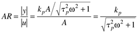

| [ Team LiB ] |
|
7.2 Bode and Nyquist PlotsIn the previous section the basic concept of frequency response was presented. For linear systems, an input forcing with a certain frequency results in an output with the same frequency, shifted by the phase angle. There are two ways to perform frequency response analysis: (i) conversion of the input signal to the Laplace domain, partial fraction expansion of the output, and inversion to the time domain, or (ii) substitution of s = jw in the transfer function. Method 2, substitution of s = jw in the transfer function, is the easiest approach. There are also two ways to display the frequency response information: Bode plots and Nyquist plots. The following first-order example is used to illustrate these concepts. Example 7.1: First-Order SystemConsider a first-order process transfer function We use two methods to find the output, given a sine forcing on the process input. 1. Laplace Transform Method Consider a first-order system, with an input that is forced with a sine wave of magnitude A and a frequency of w (rad/time). The time and Laplace domain representations of the input are The Laplace domain output is
Using a partial fraction expansion, Solving for the coefficients and inverting to the time domain (see Exercise 1), we find The exponential term decays with time, so the first term can be neglected at long times. Also, a trignometric identity can be used to find that The ss subscript is used to indicate the long-term behavior of the output, after the initial transients have decayed. Notice that the output approaches 0 at high frequencies. This is consistent with the results shown in Figure 7-2. The phase angle also approaches –90° at high frequencies. The amplitude ratio is the magnitude of the output divided by the input.  Notice that there is a natural dimensionless frequency, wtp, resulting from this analysis. An easier way to generate frequency response plots is to simply set s = jw in the transfer function. We illustrate this procedure, again with a simple first-order example. 2. Substitution of s = jw Method Substitute s = jw into the transfer function Notice that the result is a complex number (real and imaginary portions) that changes as a function of frequency. Since the magnitude of a complex number Re + jIm, can be represented by , then the magnitude (amplitude) of the transfer function (notice that the amplitude at zero frequency is simply the steady-state process gain) is Also, the phase angle of a complex number can be represented by tan–1(Im/Re), so Notice that these are exactly the relationships shown with method 1 [Equations (7.4) and (7.5)]. Also notice that one can simply plot the imaginary values as a function of the real values to obtain a Nyquist plot. Such a plot is shown in Figure 7-5 for this system. The curve begins close to (kp,0) at low frequencies, and approaches (0,0) through the first quadrant at high frequencies. That is, it starts with an amplitude of 1 at a phase angle of 0, and ends with an amplitude of 0 at a phase angle of –90°. Figure 7-5. Nyquist plot for a first-order system. The circles correspond to the three frequencies (1 = 0.01 rad/minute, 2 = 0.1 rad/minute, 3 = 1 rad/minute) used on the mixing tank.GeneralizationTo perform a frequency-response analysis, we simply substitute s = jw in the transfer function. Bode plots consist of amplitude ratio and phase angle plots as a function of frequency. The amplitude ratio plots are log-log, while the phase angle plots are semilog. Nyquist plots consist of a curve of the real and imaginary components of the transfer function, as a function of frequency. The steps to generate the plots are as follows.
The results for several common transfer functions are shown in Table 7-1.
Complex Transfer FunctionsConsider now a transfer function that is composed of a number of transfer functions and substituting s = jw, we can find the magnitude at each frequency The amplitude ratio and phase angle can be found at each frequency from That is, at each frequency the amplitude ratios add on a logarithmic scale, while the phase angles add on a linear scale. Example 7.2: First-Order + Time DelayConsider a first-order + time-delay process, written as three independent terms The amplitude ratio and phase angle can be found from Equations (7.9) and (7.10), and Table 7-1 Notice that the time delay has no effect on the amplitude ratio (compared with the pure first-order process), but it has a great effect on the phase angle, particularly at high frequencies. We can also think of the effect of the changes in each of the parameters. Gain ChangeA change in the gain merely shifts the amplitude ratio up or down (additive on a log scale), with no change in the phase angle. Time Delay ChangeA change in the time delay changes the phase angle, but not the amplitude ratio. An increase in the time delay increases the phase lag (makes it more negative) at any given frequency. Time Constant ChangeA change in the time constant affects both the amplitude ratio and phase angle. An increase in the time constant tends to decrease the amplitude ratio and increase the phase lag (make it more negative) at any given frequency. |
| [ Team LiB ] |
|
 0)
0)